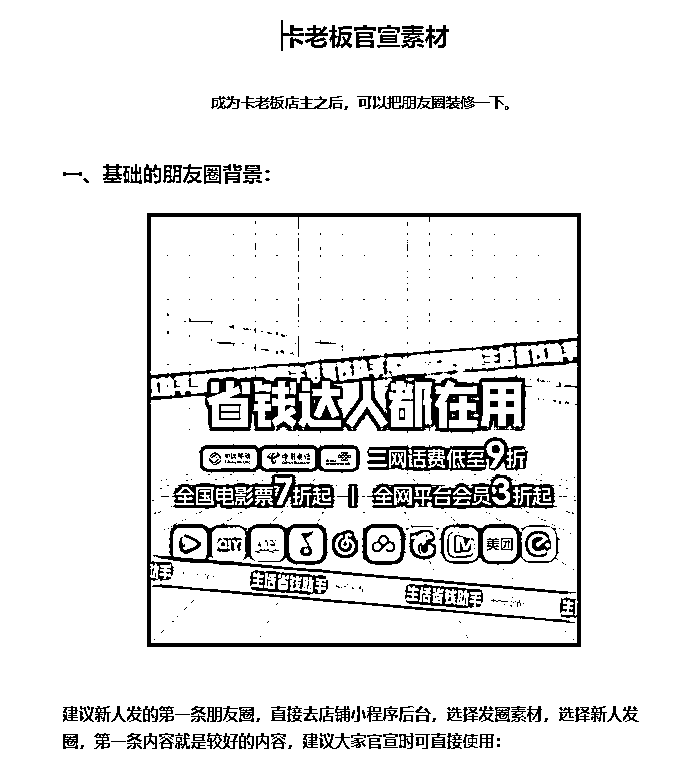
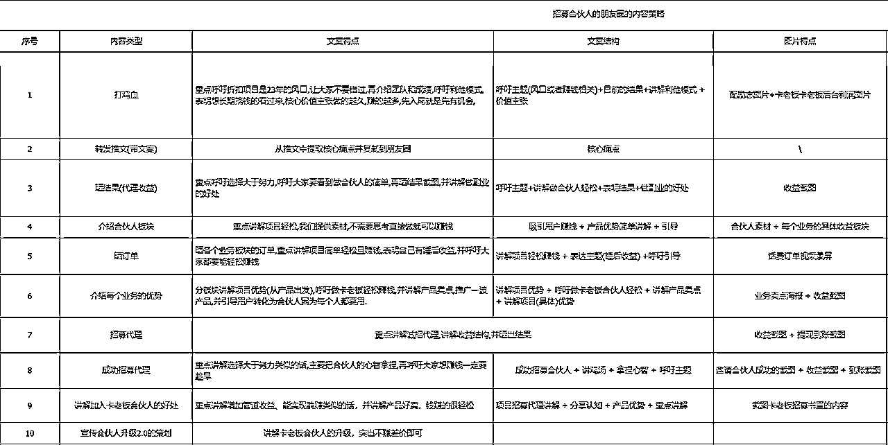

来源：https://maum12vwcsk.feishu.cn/docx/MKGTdVx4zo7r4JxNCKHcvqFjn7c
我是Y仔，一个创业三年的00后，目前围绕AI在做一系列的探索。
自从上个月在生财分享AI线上兼职项目复盘被亦仁大大加了精华之后，我就在想，能不能每个月都把我自己做的项目都写成经验复盘发出来？
确认之后，就开始构思这篇文章，本篇文章包含了我12月整个月收入30万+（目前实际是34万）的私域项目拆解，另外包含我对AI辅助、AI应用的最新理解和实操，如果对你有帮助，点赞支持就是对我最大的鼓励！
我是今年2月份做这个项目的，做开始做这个项目的目的是：把我们原有的私域做一个变现，并没有想到，在10个月后，我能用AI辅助，把整个项目利润翻倍，并把它当成主营业务来做。
这个项目叫卡老板，是一个朋友做的（生财编号1900+的大佬），公司非常有实力，也是因为这个原因，我很早就参与卡老板这个项目了，并且一直在做。
用户可以在卡老板里购买各种折扣商品，还可以成为合伙人，推广产品赚佣金，当然还能拉合伙人，赚奖励。
卡老板最开始的样子是：话费充值+会员充值，当时我对这个平台的定位就是一个引流+变现的小项目。
在11月份的时候，卡老板官方做了一个大改版，他们把各种生活常见的刚需的生活服务折扣渠道都打通了，而且都整合在一个产品里。
同时卡老板平台还将原本的加盟费298，设计了一层分销，邀请一个合伙人，即可获得200元奖励。
也是因为这两个改动，我对这个项目的定位从原本的辅助引流+变现的小项目变成了：
我从17岁（2019年）就开始做电子烟、球鞋的微商了，因为被禁和各种打压，就没继续了。
但自从我创业以来，一直在做各种私域，长期短期的都有。
其实这类CPS充值项目，很早之前就有人做了，但是我看这类项目都绕不开一个点（也是我之前没做的原因），那就是：
我个人是很不喜欢这种内卷的项目的，因为这种项目，拼的是背后的资源和获客手段，要一直做事、干活，不干就没利润。
熟悉我的朋友都知道，我是做知乎好物开始创业的，我选项目更偏向于知乎好物那种有长尾效益，睡醒起来就能看到后台有收入进账的项目。
卡老板这个项目就是这样的，和其他的CPS充值项目有本质区别，我现在每天睡醒，打开后台就能看到源源不断的订单，这种感觉就和之前做知乎好物差不多。
（手上一个私域账号的后台）
1.和传统CPS项目和充值项目相比，卡老板转化率高，使用率高，复购率高，用户锁定之后，只需要不断引导用户省钱即可。
2.其他CPS充值项目，大多数都以单一产品为主，用户习惯无法养成。
而卡老板的产品涵盖各种生活常见的刚需的折扣渠道：折扣话费、电费、燃气费、电影票、会员，外卖、打车、快递、加油、折扣餐饮、购物返利等等，产品受众广，人人需要。
3.其他CPS项目，大部分的利润点都在产品上，比如话费，基本是成本都是0.93折，供货0.95折，赚0.02折的利润。
官方针对合伙人把产品利润放出来，就是为了吸引更多人去推广，通常来说，这样的项目前期都有红利期。
4.传统的CPS项目，只有卖产品这一种收入。而卡老板针对所有合伙人，提供两种收入渠道：推广产品赚差价和推广合伙人赚奖励。
我的打法是：通过折扣话费、电费、燃气费、电影票、会员，外卖、打车、快递、加油、折扣餐饮、购物返利等等产品引流，留住用户，最后通过推广合伙人这个产品，快速创造高额利润。
简单来说就是通过平台提供的产品引流，在通过转化合伙人快速创造高额利润。
讲清楚这个项目的逻辑之后，我在讲讲我为什么会选这个项目，以及我是怎么运用AI应用去做的具体细节。
选择这个项目的逻辑，是多维度的：
1.因为对比其他私域项目来说，做卡老板的性价比最高。
对内：因为卡老板里的合伙人供货价足够低，足够吸引人，能够维持不错的利润的同时能让用户能够记住我。
对外：我还可以借用卡老板里的产品去引流，打粉。
2.受众足够广，生活服务类产品的受众，是所有人，只要你想省钱，就一定会看，而且发这些内容，不需要有太多IP属性，只需要把产品优势说清楚即可。
3.店主开通之后，推广赚钱的操作足够简单，大部分的内容产出，用AI来输出，让店主来宣传，完全没有问题。
最基础的推广，只需要发发朋友圈，这些朋友圈图片和素材，只需要用AI快速生成即可。
这几点，完美契合了我上一篇精华帖讲的AI项目公式：
讲完这个，我再给大家拆解一下卡老板项目的收益和我的收益拆解。
做卡老板这个项目的主要收益有两个：
1.一个是卖产品的佣金，这里每单能赚0.5-12元（看具体产品，比如外卖有时候就是0.5一单的返利，话费高额的11块钱）
2.一个是推广拉新的收益，这里每拉一个合伙人，就能赚200，天然适合各种有私域池子或者缺项目做的人。
而我的收益里，卖产品所得的收益总共19万（总共8万个订单），拉新的奖励总共15万（店主人数750+），比例大概是卖产品的55%，拉新的45%，目前我正在尝试用更多的办法，让拉新的收益占比大于收益占比。
当时我的思考是：
用AI辅助，要做的一定是最节省时间，最能看到实际效果的板块。
这个项目的用AI辅助来切入，节省时间，最快速的切入点一定是私域运营。
在私域运营里，能用AI切入的就是各种各样内容（朋友圈文案、图片、社群营销文案、推文、话术等等）的产出。
我在确定了这个事项之后，和团队内容定了一个事情：
所有内容，都用AI辅助制作，只需要用AI辅助加快我们推广内容的生产速度，只做一件事，用AI辅助节约内容产出的时间。
具体的产出细节的内容如下：
因为在店主们开始做私域之前，先要把朋友圈的基础装修资料写好了，让账号有好感非常重要，从朋友圈背景，到头像，到每一条朋友圈的定位，执行的人员都必须要非常清楚才行，不然产出的内容绝对不会有好感的。
所以我们用GPT辅助生成了官宣素材，再加上我们自己后期优化，做出了以下内容：

【腾讯文档】卡老板官宣素材
https://docs.qq.com/doc/DZFBzdnNFaFljdnBp
因为成交话术有分产品的和转化合伙人的，我们针对这个，让GPT生成了两套话术，再经过我们后期迭代梳理，最终出现了两套成交话术，一个是针对销售产品的，一个是针对转化合伙人的。
【腾讯文档】销售转化话术链接：
https://docs.qq.com/doc/DSnhZRG5Pc3hlQVhi
有节奏的发朋友圈，相信是每个做过私域的朋友都懂的，我们也给我的合伙人提供了AI生成的内容。
卡老板官方平台围绕朋友圈素材，出了一个小程序，合伙人可以直接从后台拿素材。
另外还给合伙人们配了一个卡老板朋友圈文案生成器，这个生成器，提高了我们内容产出效率的80%，可以点击下面的链接体验：
我们围绕卡老板的产品，让AI产出了一套产品朋友圈策略和一套合伙人朋友圈策略：

合伙人招募的文档链接：
产品推广朋友圈文案策略：
有了这一套朋友圈素材+朋友圈策略，能够完全确保新加的用户，看完几条朋友圈就可以完全熟悉我们的产品和内容，同时我们还能通过这些朋友圈触达我们原有的客户，让他们快速了解这个产品。
我根据我们的流量画像，让AI写了一系列的群发策略和话术，再经过我们的仔细打磨，去精准触达粉丝。
群发话术的链接如下，可以看看：
把意向用户们拉到一个群里，用AI提前准备好的社群转化话术，成交用户

用AI产出各种优质的推文，自己发有效果之后，马上同步给合伙人。
这里我们做的所有执行动作，都是一环接一环的，连环打，通过小程序链接，二维码等方式，温柔的触达用户。
我们先是通过保障每个账号每天最少更新三条朋友圈和体系化的朋友圈打法，来确定我们原有用户的增长，
在用九个体系的群发话术，每天确保群发一次给未激活的用户，去深度触达用户。
做完这两个动作之后，我们招募的合伙人数量和订单量都快速起来了，项目里的大部分内容都是用AI辅助写出来的，可以这么说，如果没有AI，我自己去准备这些内容，最少都要一个月时间，用AI辅助，这些内容，一共只花了1天时间。
后来我们发现有部分用户还是处在观望状态，所以我们又围绕那一部分用户制作了一套体系的社群运营打法，再把他们都拉进群里，在群里做持续成交。
最后我们再围绕合伙人，进行推文培训，把写的三篇合伙人招募推文，全权交给合伙人去洗稿，教学，教他们改写，用最低成本，撬动各种类型的推文。
看到这里，我想和你说是：
感谢你看到这里！
现在我也正在用AI探索更多的私域运营玩法和公域打法，像卡老板这种类似的项目也有很多，生财里的很多大佬和前辈都是做淘客出身的，推广这种产品肯定是比我有经验。
希望能收到各位大佬指导，有同频的朋友或者对这个赛道感兴趣的，也欢迎与我交流，一起加油，进步，一起生财有术！